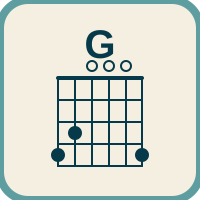

Chord Drill
A looping trainer for chords. Big shape, numbered fingers, and a strum pattern that keeps time until you pause it.
Small tools. Some run in the browser. Photo Cull can also be downloaded and run on a Mac.

A looping trainer for chords. Big shape, numbered fingers, and a strum pattern that keeps time until you pause it.
Name the photos and videos you want to keep, and drop the rest. In Chrome or Edge, choose a folder and edit it here. The Mac app reads Desktop/Photos, plays AVI, and moves rejects to Trash.